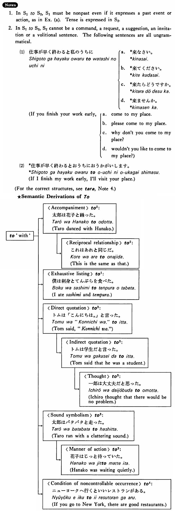

←
DoJG
→
と (4)
(B. 480)
Example sentences
(ks).
ニューヨークに行く
と
面白い店が沢山ある・あります。
If you go to New York, there are many interesting shops.
(a).
それは先生に聞く
と
すぐ分かった。
I understood it immediately when I asked my teacher.
(b).
タイヤは古い
と
危ないですよ。
Tires are dangerous if they are old.
(c).
魚が嫌いだ
と
日本へ行った時困りますか？
If you don't like fish, will you have trouble when you go to Japan?
(d).
学生だ
と
割引があります。
If you are a student, there is a discount.
Formation
{V/Adjective (い/な) Noun+copula} informal nonpast
と
話す
と
If someone talks
高い
と
If something is expensive
静か
だと
If something is quiet
先生
だと
If someone is a teacher
